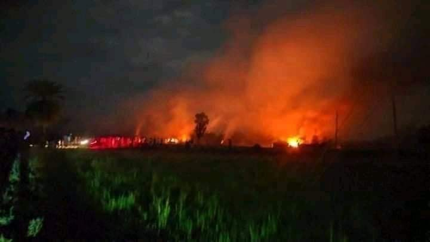

নিরীহ ও সংখ্যালঘু হওয়ার সুযোগে আপনি তাদের বসতবাড়ি ধ্বংস করে, জুলুমের স্ট্রিম রুলার…
১৮ অক্টোবর, ২০২১
নিরীহ ও সংখ্যালঘু হওয়ার সুযোগে আপনি তাদের বসতবাড়ি ধ্বংস করে, জুলুমের স্ট্রিম রুলার চালিয়েও পার পেয়ে যেতে পারেন। কিন্তু আল্লাহর দরবারে ঠিকই আসামি হয়ে থাকবেন এবং জবাব দিতে বাধ্য হবেন। রাসূল সাল্লাল্লাহু আলাইহি ওয়া সাল্লাম বলেন- ❝ মাজলুমের বদদোয়া থেকে বাঁচো। নিশ্চিত, এ বদদোয়া আর আল্লাহ'র মধ্যখানে কোনো প্রতিবন্ধকতা থাকে না। ❞ (বুখারি-মুসলিম)
মাজলুম চাই মুসলিম হোক বা কাফের। তার আর্তনাদ আরশ পর্যন্ত পৌঁছে যায়।
